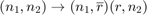
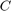

Hierarchy in the game of modes (extra worksheet)
Written by Sebastian Kraemer, IGPM at RWTH Aachen University
Hierarchical tensors have been introduced by L. Grasedyck (2010).
To understand why hierarchical decompositions work, essentially, only two aspects are important:
- Each matrix can be split into a product of two matrices (where the rank determines the joint mode size between these) without loss of information (or via minimal loss of accuracy via the SVD):
- Any orthogonal (norm preserving) mapping does not change singular values and hence not also the rank of a matrix. We can even write this down explicitly:
We can very conveniantly denote any object appearing in our decomposition just by its mode sizes. Keep in mind that both the reshape and permute operation only relocate entries. These operations can simply be represented by a corresponding rearrangement of mode sizes.
A low rank matrix decomposition of A simply follows this scheme:
We, in a certain way, make use of the Einstein notation, that is, every index appearing twice implies a summation. Here,
Whereas an actual SVD looks like:
Now, and are known to be column and row orthogonal, respectively. We can denote this as follows:
Note that we have already transposed (permuted) the entries of . For the sake of simplicity, we are always going to multiply and :

Contents
clear all % this clears all variables of their values
The Tucker tree
We can now write down the first step required for a Tucker decomposition:
What you actually need to do in this first step is a reshaping of , then an SVD of , and subsequently multiply and and reshape this again. But after all, there is no more information gained by writing this down every time. The next step then is
We have written in this step, so we should better justify that. Therefor, just note that is an orthogonal matrix (cf. item 2 above).
The final step then is
Putting everything together:
Simple as that, we know that
must be our Tucker decomposition, since at no step, we have lost information. Besides, nothing stops us from using truncated SVDs. Due to the orthogonalization, the loss of accuracy in each step will as small as possible. However, this does not mean that the hole decomposition is optimal concerning this matter. But one can show that it is close to optimal.
EXERCISE* 1: 4-dimensional Tucker decomposition
Write down analogous steps for a Tucker decomposition of a 4 dimensional tensor.
EXERCISE* 2: Tucker SVD
We have seen that the matrices as well as the core  are easy to calculate even without the previous consideration. Yet, we may as well construct a decomposition in this fashion. Create a function as separate file which does that.
d = randi([4,6],1) r = randi([2,6],1) n = zeros(1,d); Rho = cell(d,1); for mu = 1:d n(mu) = randi([2,5],1); Rho{mu} = randn(n(mu),r); end n T2 = CP_to_full_tensor(Rho); % Rho_eigen = Tucker_SVD(T2)
d =
4
r =
6
n =
3 2 5 2
EXERCISE* 3: Tensor Train SVD
In the worksheet Tensor_Train_format, the algorithm for the TT-SVD is already given. Write down the steps in upper notation for a 4 dimensional tensor.
EXERCISE** 4: Herarchical tensor decomposition
You have seen two quite different ways to decompose a tensor. Can you think of another or continuing way? (you will need at least a 4 dimensional tensor). To which matricizations do the accouring summation indices correspond? However, be careful with orthogonality. It may not be as simple as above. Implement such a further decomposition for a fixed scheme.
EXERCISE** 5: Standard representations
We have made life easier by multiplying and . Unfortunately, the singular values will not appear explicitely as in matrix SVD anymore. Repeat the decompositions above, but this time keep the diagonal matrices such that at the end, they appear in the decomposition. Again, be careful with orthogonality constraints.